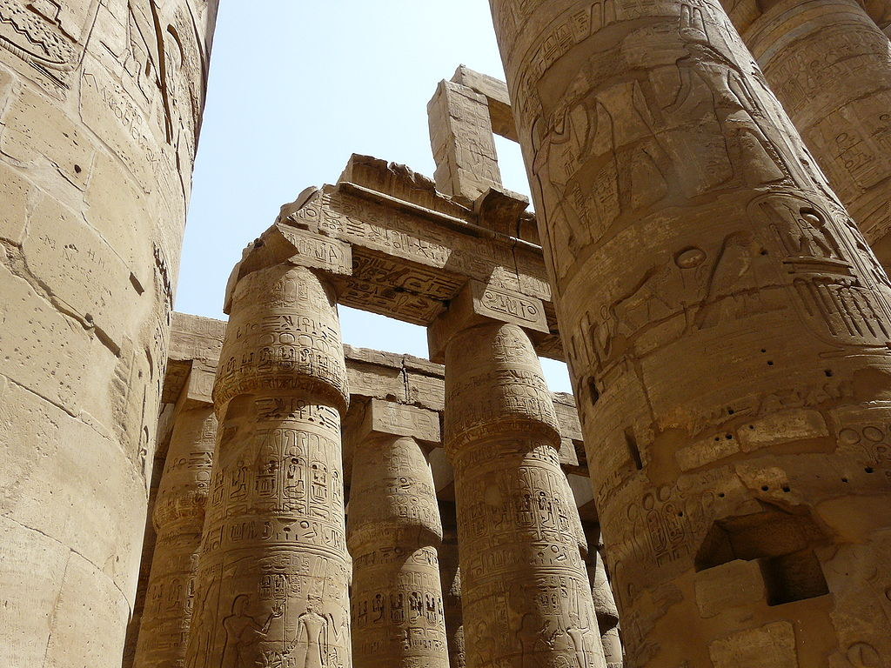

Karnak Temple Complex
he complex is a vast open site and includes the Karnak Open Air Museum. It is believed to be the second[citation needed] most visited historical site in Egypt; only the Giza Pyramids near Cairo receive more visits. It consists of four main parts, of which only the largest is currently open to the general public. The term Karnak often is understood as being the Precinct of Amun-Ra only, because this is the only part most visitors see. The three other parts, the Precinct of Mut, the Precinct of Montu, and the dismantled Temple of Amenhotep IV, are closed to the public. There also are a few smaller temples and sanctuaries connecting the Precinct of Mut, the Precinct of Amun-Re, and the Luxor Temple. The Precinct of Mut is very ancient, being dedicated to an Earth and creation deity, but not yet restored. The original temple was destroyed and partially restored by Hatshepsut, although another pharaoh built around it in order to change the focus or orientation of the sacred area. Many portions of it may have been carried away for use in other buildings. The key difference between Karnak and most of the other temples and sites in Egypt is the length of time over which it was developed and used. Construction of temples started in the Middle Kingdom and continued into Ptolemaic times. Approximately thirty pharaohs contributed to the buildings, enabling it to reach a size, complexity, and diversity not seen elsewhere. Few of the individual features of Karnak are unique, but the size and number of features are overwhelming. The deities represented range from some of the earliest worshiped to those worshiped much later in the history of the Ancient Egyptian culture. Although destroyed, it also contained an early temple built by Amenhotep IV (Akhenaten), the pharaoh who later would celebrate a near monotheistic religion he established that prompted him to move his court and religious center away from Thebes. It also contains evidence of adaptations, using buildings of the Ancient Egyptians by later cultures for their own religious purposes.
History
The history of the Karnak complex is largely the history of Thebes and its changing role in the culture. Religious centers varied by region, and when a new capital of the unified culture was established, the religious centers in that area gained prominence. The city of Thebes does not appear to have been of great significance before the Eleventh dynasty and previous temple building there would have been relatively small, with shrines being dedicated to the early deities of Thebes, the Earth goddess Mut and Montu. Early building was destroyed by invaders. The earliest known artifact found in the area of the temple is a small, eight-sided column from the Eleventh Dynasty, which mentions Amun-Re. Amun (sometimes called Amen) was long the local tutelary deity of Thebes. He was identified with the ram and the goose. The Egyptian meaning of Amun is, "hidden" or, the "hidden god"